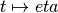
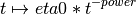

operalib.learningrate implements the learning rate for (Stochastic) gradient descent algorithms
operalib.learningrate
operalib.learningrate.
Constant
Constant learning rate.

Attributes
Methods
__call__
InvScaling
Inverse scaling learnin rate.

eta0 : float, default 1.
power : float, default 1.
InvScaling : Callable